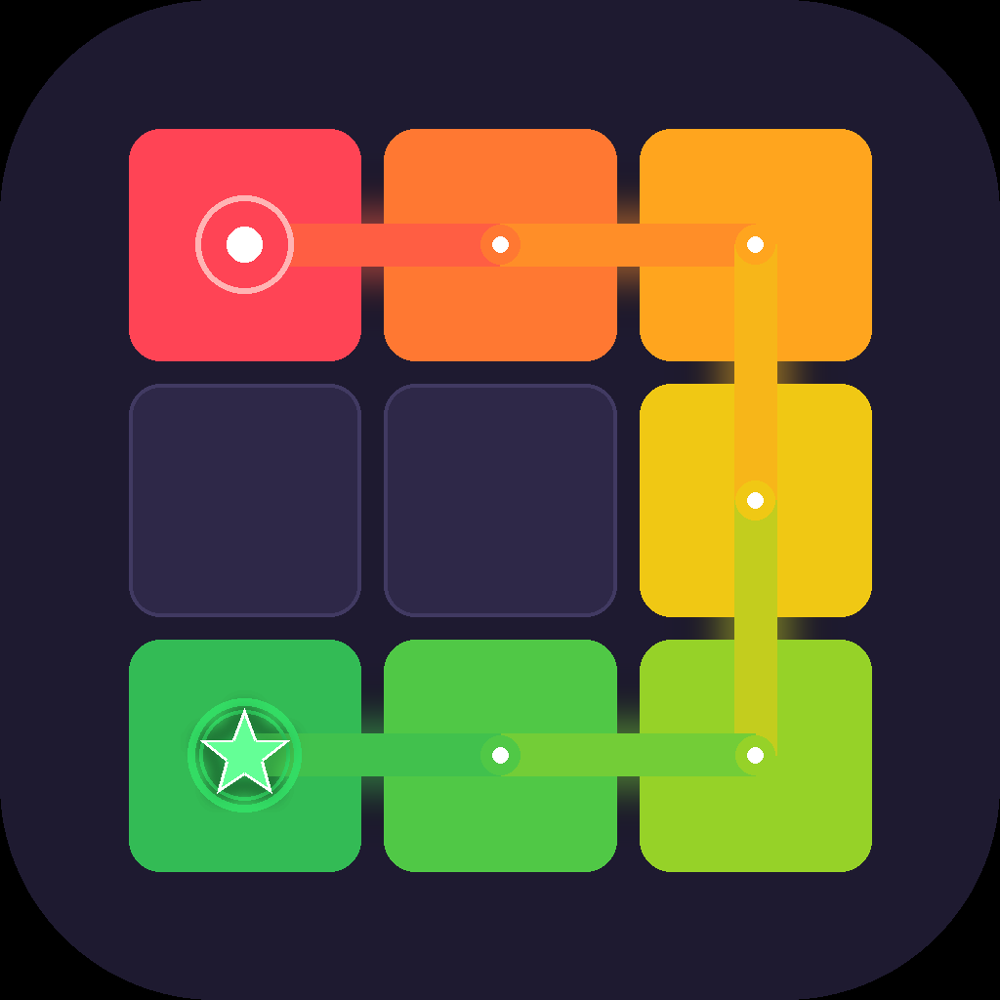

Painting Star
A one-stroke color-mixing puzzle · iOS
About
Trace a single connected path through every cell on the grid. Pick up paint orbs as you go — red, yellow, blue, and white blend on your brush. Reach each star with the exact color it needs to clear the stage.
But there's a catch: paint only adds. Once mixed, you can't unmix. Plan your route, follow the order of the stars, and finish before the timer runs out.
Features
- One-stroke path drawing on a grid
- 4 primary paints blend into 15 unique colors
- Multi-star stages with subset-chain logic — order matters
- 60+ hand-tuned and procedurally generated stages
- Offline, single-player — no internet required
- Optional one-time purchase to remove ads
Support
Questions, bug reports, or feedback? Email nninnis.dev@gmail.com and I'll get back to you.